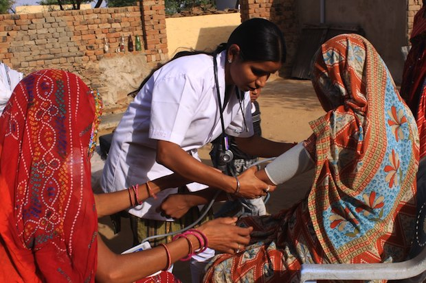

Improving Healthcare in Rural Areas
March 15, 2024
Mental health awareness campaigns in Bangladesh have gained momentum, contributing to the destigmatization of mental health issues across the country. These initiatives aim to address the prevalent stigma and improve access to mental health care. A 2023 cross-sectional study highlighted the widespread nature of mental illness stigma in both rural and urban areas of Bangladesh. The research identified significant differences in stigma based on factors such as gender, age, geographical location, socioeconomic status, and occupation. The study emphasized the need for coordinated efforts to develop contextually tailored mental health strategies to reduce stigma and promote mental health nationwide.
Despite these efforts, challenges persist. Mental health services in Bangladesh are limited, with a shortage of qualified professionals and inadequate facilities, particularly in rural areas. The societal stigma associated with mental health illnesses remains a significant barrier to obtaining care. Addressing these challenges requires enhancing service quality, increasing health service management, and strengthening community-based care to provide higher satisfaction and quality of life for service users and their families. Community-based mental health services present both opportunities and challenges in the Bangladeshi context. Implementing such services necessitates addressing systemic issues, including the lack of structured mental health services at primary and secondary health care levels, and overcoming societal stigma and taboos associated with mental health illnesses. In conclusion, while mental health awareness campaigns in Bangladesh have increased participation and contributed to destigmatizing mental health issues, significant challenges remain. Ongoing efforts to improve mental health services, reduce stigma, and implement community-based care are essential to further progress in this area.